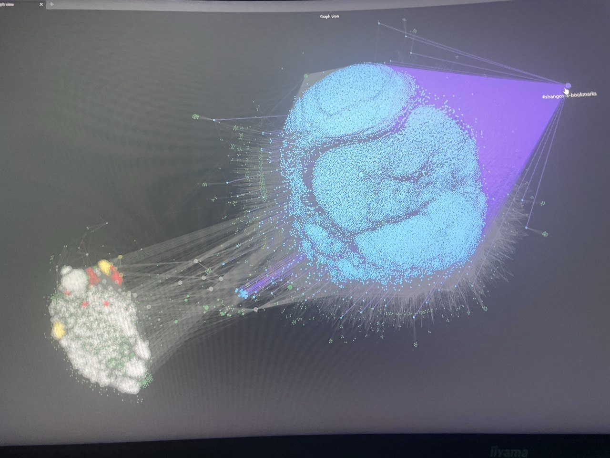

FieldTheoryX Is Live
25 Apr, 2026 · 18 min read
There are some pieces of software you discover and immediately recognize as correct.
Not correct in the inflated startup sense where every founder on earth is apparently “reinventing” something while standing in front of a gradient.
Correct in the simpler sense.
A real problem.
A real shape.
A solution that snaps into place so cleanly that the only question left is: why was it not already available when you needed it?
That was Field Theory for me.
Andrew Farah built the original project.
The idea is clean: take your X/Twitter bookmarks, keep them local, index them properly, and make them retrievable again.
Not performatively organized.
Not “AI-powered” in the empty sense.
Not sprayed across some cloud dashboard that wants to become the center of your life.
Just local-first retrieval for something that should never have been trapped in a scroll to begin with.
There was one immediate problem, at the time: it only worked on Mac.
And my Macs are all Intel-era, pre-2012. Nice to keep a bitcoin chart open. Which they barely manage on 4GB RAM...
So I built my own fork.
~
If you use X seriously, you know what bookmarks become after a while.
Not a library.
Not a system.
Not even really a collection.
A sediment layer.
Saved threads. Saved papers. Saved tools. Saved ideas.
Saved things you absolutely meant to return to.
And then time passes.
Forgotten threads. Forgotten papers. Forgotten tools. Forgotten ideas.
The interface does what platforms like X always do when they half-build an important feature: it gives you just enough surface area to create value and nowhere near enough structure to recover it...
So bookmarks accumulate.
And once they accumulate without retrieval, they stop being an asset and start becoming a guilt pile.
That is the part I hate.
Not because the information disappears. But because it is still there. Close enough to matter. Buried enough to be useless. A uniquely irritating failure mode...
You did the curation. You did the attention work. You selected the signal.
And then the product throws it all back at you as one long undifferentiated scroll.
That is not a knowledge system.
That is storage without recall.
And storage without recall is just a prettier form of loss.
~
Field Theory solves that by treating bookmarks like they deserve to be treated.
=> As material.
FieldTheoryX takes that same core idea and makes it feel natural in my own Windows + agents workflow.
→ Then it stores them in SQLite.
→ Then it indexes them with full-text search.
→ Then it gives you a CLI workflow that makes them usable again.
That means:
- local sync
- local storage
- local search
- local control
- terminal-first retrieval
- scriptable archive workflows
No hosted layer. No subscription logic. No remote index pretending to be a product moat.
Just your archive, on your machine, in a form you can actually work with.
That matters to me more than the average software pitch probably allows.
Because I think a lot of modern tools are built backwards.
They start by asking how much control they can centralize. Then they wrap the dependency in convenience and call it innovation. And I have less and less patience for that :).
Local-first systems feel better not because they are ideologically pure, but because they respect the user’s leverage.
They let the artifact belong to the person doing the work.
That is what I want more of...
~
It is also important to say clearly what this is and what it is not.
This is not a generic browser-bookmark importer.
It is a Windows-first fork of Andrew Farah’s Field Theory CLI, focused on X/Twitter bookmarks, local search, and agent-friendly retrieval.
That distinction matters.
The Chrome and Brave support here is about session/auth support on Windows. It is the path that lets the tool sync your X bookmarks locally and keep the whole workflow clean.
That is different from pretending the product is some universal bookmark manager for every surface on Earth.
I do not want to oversell it. I want to describe it correctly.
Because good software does not need exaggeration. It needs precision.
And the precise pitch here is already strong enough:
If you have years of saved X bookmarks and you want them to become searchable, local, and actually usable in a Windows-first workflow, this tool is for you.
~
There is also one thing I should say openly.
FieldTheoryX was built with heavy help from Diop, my agentic engineering system.
I am still early as a software engineer. Very early, honestly.
But I am not early at caring about systems, workflows, tools, research, and the shape of useful software. I have spent enough years living inside complex personal systems to know when a tool removes drag and when it only adds theater.
Diop helped me move faster. But it did not decide what mattered.
I chose the product direction. I tested the workflows. I handled the release judgment. I ran audits. I rejected bad launch copy. I forced the classification feature to be marked experimental instead of pretending everything was magically stable. I fixed the naming, package, landing page, domain, and deployment mess until the thing was coherent.
That is probably the honest version of modern building for me right now.
Not “AI did it.” Not “I hand-coded every line in a cave.”
Something more interesting and more real.
A human with taste, intent, stubbornness, and a growing engineering base, working with agents that can actually extend the surface area of what is possible.
This feels like the future I want to keep exploring. Don't you?

Diop's Brain + ~17K Bookmarks ingested into it with FieldTheoryX == 28K nodes in total
~
There is a deeper reason I liked doing this fork.
It fits the kind of products I increasingly care about building.
Not giant abstract “platform visions.” Not software that needs a paragraph of theater before the utility becomes visible.
Sharp tools. Tight wedges. Useful objects.
The kind of software where you can explain the pain in one sentence and the relief in one sentence.
Your bookmarks are trapped in a scroll. Now they are searchable locally. That is a real before and after.
And the best thing about software like that is that it creates immediate honesty. Either it removes drag or it does not. Either it turns clutter into leverage or it does not. Either it respects the user's material or it does not.
I prefer problems like that. They are much cleaner than speculative nonsense.
~
So what exactly do you get in FieldTheoryX?
You get a local-first X/Twitter bookmark archive that can:
- sync your saved bookmarks from X/Twitter
- store them locally in SQLite
- search them through full-text indexing
- list and inspect them from the CLI
- use a separate ftx command
- keep the workflow grounded on your machine instead of disappearing into a cloud dependency
There is also optional LLM classification and exploration. But I am marking that part experimental for now.
Core sync, search, and indexing are the stable release. Classification is structurally hardened, schema-validated, and tested, but I still want final live Codex/Claude validation before calling it stable.
That distinction matters too. I would rather ship a useful tool with one feature clearly marked experimental than pretend the whole surface is equally mature.
That is part of the release discipline I want to build into everything I ship from here.
~
The practical layer is local search. The more important layer is what it restores: Retrievability.
That is the whole game more often than people admit. We talk a lot about information capture. Much less about recovery. But the value of anything you save is downstream of whether you can get it back at the right moment. A reference you cannot recover is not much better than a reference you never kept...
What FieldTheoryX restores is the ability to re-enter your own archive with intent. Not passively browse it. Not hope to stumble into it. Actually query it. Actually use it.
That changes the feeling of the archive. It stops feeling like digital clutter. It starts feeling like infrastructure.
~
And I like that word here: infrastructure. Because that is what the best small tools really are.
They are not always loud. They do not always arrive with a giant launch narrative. They do not need to cosplay as world-changing in order to matter.
They become part of the builder's environment. Quietly. Reliably. Repeatably.
The right command. The right lookup. The right result at the right time.
That is enough to make a tool valuable. Sometimes that is more than enough.
I think FieldTheoryX fits that category. It is not trying to become your social network. It is not trying to own your attention. It is trying to make something you already curated retrievable again.
~
So yes, this is also a launch post. But it is not only that.
It is also me planting a small flag for the kind of software work I want more of: more local-first tools, more practical systems, more sharp products with immediate utility, more work that respects the user's control, more software that removes drag instead of adding another layer of dependency and calling it progress.
It is also me shipping something for the first time, and that is no small step. In my opinion :p. I said an MVP a day but clearly, I was shooting for the moon. I am glad to finally be landing on a star.
There will be more.
=> Next up is Diop's brain. I will be open-sourcing the entire architecture/system. Simple way to supercharge your Hermes agent memory.
I'd better release it quickly though, because NousResearch works at such speed, they might have implemented my idea by then. Which would be kinda nice -- ngl.
=> Then is FollowGraph. I thought it would be released by now: although the website is live and you can find it if you look for it, I still haven't properly shipped it. Cause I am not done yet (obviously). Realized it was way too slow for an X power user (such as myself). It would take 48 hours to scrape through the 7500 accounts I was following then. I know people who follow 10 times that amount. And I know they won't wait 10 days for something that was supposed to be useful to finish showing its usefulness. So I kept testing and iterating. Brought it down to ~12 hours for 7,500 accounts. Reaching ~4 hours would seal the deal. It managed to find 500 completely dead accounts that I was still following, unfollowed them for me, and now I can finally follow all the interesting people I keep finding on X every day. In the meantime, if you find the project and decide to play with it, it's at your own risk. And do mind its slowness.
Anyways.
~
Andrew Farah deserves credit for the original project and the original shape of the idea.
FieldTheoryX is my Windows-first, security-hardened fork of that idea. Same philosophical root. Different product opinion.
It is free. It is open source. Use with caution.
And if your X bookmarks have turned into a graveyard of good intentions, you can finally do something useful with them.
GitHub:
https://github.com/shangobashi/fieldtheoryx-cli-windowsport
Install:
npm install -g fieldtheoryx-cli-windowsport
Then:
ftx doctorftx syncftx search "ai memory"
Landing page:
https://fieldtheoryx.issalabs.xyz
Cheers.
— Shango Bashi
P.S. Bonus tip: best use-case, in my opinion, is Obsidian + FieldTheoryX == Memory System for your favorite Agent.
I'll make a long-read on how I created Diop's Memory Architecture in a few days (I need some rest). I'm pretty proud of that one.
Picture below shows 28K nodes inside my Obsidian graph, of which ~17K are my X bookmarks if I recall properly (I hardly use my own memory anymore :p).
Super useful bonus tip: don't even bother using FieldTheoryX yourself.
Feed your agent the landing page instead, and tell it:
“Use FieldTheoryX (https://fieldtheoryx.issalabs.xyz) to ingest my X bookmarks into [(your_Memory_vault(I_Recommend_Obsidian))].”
https://fieldtheoryx.issalabs.xyz